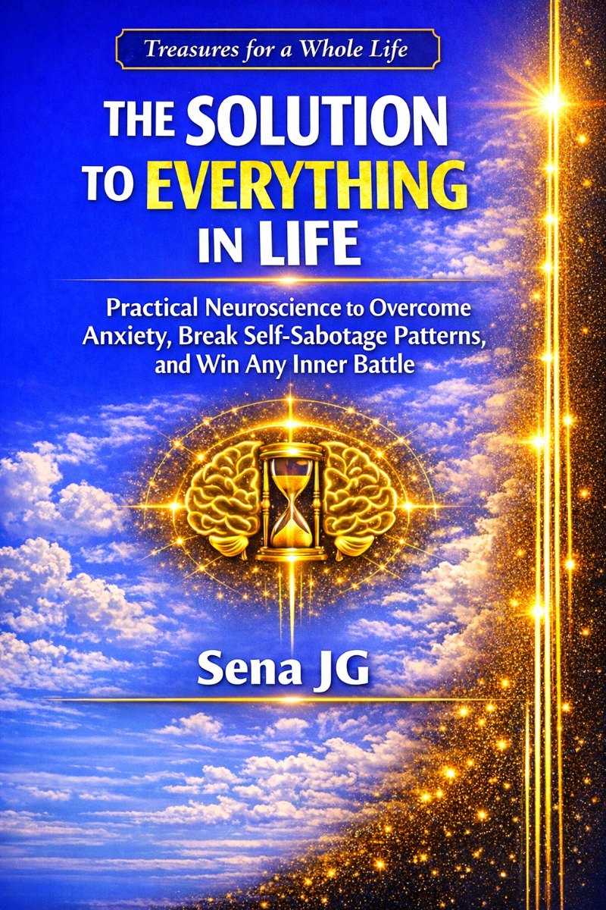
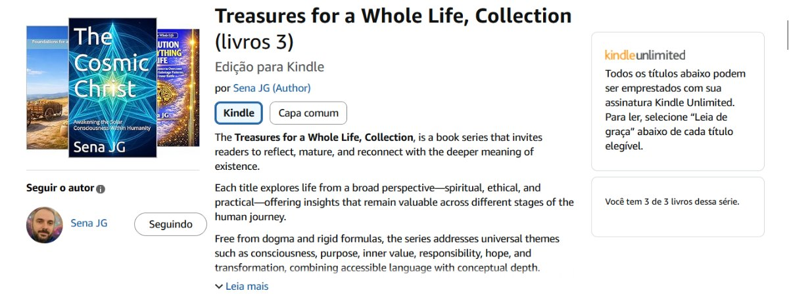

Treasures for a Whole Life
Book: The Solution to Everything in Life
Practical Neuroscience to Overcome Anxiety,
Break Self-Sabotage Patterns, and Win
Any Inner Battle
Author: Sena JG
Book from the Series: Treasures for a Whole Life
1st edition 2026
Read now: amazon.com/dp/B0GPNS5VYL
The Solution to Everything in Life: Practical Neuroscience to Overcome Anxiety, Break Self-Sabotage Patterns, and Win Any Inner Battle (Treasures for a Whole Life, Collection) Kindle e-book
by Sena JG (Author) format: Kindle e-book
Real life demands more than motivation: it demands clarity, emotional stability, and consistent action.
The Solution to Everything in Life brings together practical strategies to face challenges, anxiety, and self-sabotage with applied neuroscience and simple decisions that fit into everyday life.
You will learn how to regain your center when your mind races, how to act again even without willpower, and how to build a sustainable rhythm of improvement.
This book is straightforward, objective, and designed for you to start—including through the sample.
In this book, you will find:
- Short strategies for difficult days;
- Ways to unblock and regain focus;
- Techniques to reduce self-sabotage in daily life;
- Practical principles for emotional consistency;
Start with the first 20 pages.
At the end, a bonus appendix chapter with techniques for bio-psycho-emotional decompression, meditation, directed breathing, and mindfulness (Mindfulness).
A truly great book to read and extremely useful. Give it a try!
Practical, tested, and highly useful solutions.
Based on life experiences and modern Neuroscience.
Personal restoration and success come from the inside out. But they depend on movement. They often depend on external stimuli—and on the decision to feel good.
Meaning acts as a compression structure for experience.
In this book, we will explore all of this.
This book is especially dedicated to you—the readers!
Happy reading and practical results to all!

Analysis of the Work: "The Solution to Everything in Life"
The work "The Solution to Everything in Life", by Sena JG, is a self-help and personal development book that proposes to be a practical and profound guide for building a life with more meaning, stability, and integrity. The following analysis is divided into topics for greater clarity.
1. Structure and Style
- Organization: The book is very well structured. It is divided into 11 chapters, each with 2 to 3 parts, culminating in an epilogue and a practical appendix with 12 exercises. The presence of a detailed table of contents at the end (pages 210-213) reinforces the organization and allows the reader to navigate through topics of interest.
- Writing Style: The prose is sober, reflective, and dense in concepts, but maintains an accessible and almost poetic tone. The author uses powerful and recurring metaphors ("treasure", "barn", "axis", "signature", "mirror", "Ship of Theseus") to anchor abstract ideas, creating a unique and cohesive language throughout the text. The style is more philosophical than strictly scientific, although it makes occasional references to neuroscience and psychology to support its arguments.
- Tone: The tone is that of a wise and patient mentor, who offers not magic formulas, but rather a path of reflection and practice. It is a tone that welcomes the difficulty of human existence ("the tired reader") and offers not an escape, but an "ontological posture" to face it. There is a constant search for balance: between firmness and flexibility, action and contemplation, the individual and the relational.
2. Central Themes and Main Thesis
The work builds a robust thesis around the idea of a "treasure that no one can steal". Below are the main concepts that support it:
- The Continuity of Being: The book begins with the fundamental question: "what in us is truly ours?" and "what remains when everything changes?". The answer is not in external possessions, but in a "dimension of the human being that does not depend directly on circumstances". This dimension is the "treasure" to be cultivated.
- Perception and Interpretation as Lived Reality: One of the strongest chapters (Chapter 2) argues that we do not live in the objective world, but in "lived reality", which is the fruit of our interpretation. The mind is not a camera, but a functional model of the world. Therefore, changing one's own perception and the interpretive "filters" is the basis for any lasting transformation.
- The Need for Meaning: The author places meaning as a biological necessity, as vital as air. It is the "organizing axis of experience", which gives direction, allows one to persevere through pain, and prevents life from becoming a succession of empty events. The maturation of meaning leads to a less defensive identity and greater openness to the world.
- The Crossing from Understanding to Action: A crucial and realistic point of the book is the distinction between understanding something and living it. Change is not instantaneous; it requires a "crossing" made of repetition and "conscious habit". The goal is not perfection, but the "progressive expansion of the space of choice", until the new practice becomes "nature".
- The Other as an Active Mirror: The book rejects the idea of the other as a mere obstacle. Instead, it presents them as a "revealer of the parts of me that still react automatically". Relationships are opportunities for self-knowledge and training for virtues. Deep dialogue creates an "intermediate region of meaning" that transforms both involved.
- The Nature of Suffering: The author offers a mature distinction about pain: there is suffering that asks for action (correctable) and suffering that asks for assimilation (structural, inherent to life). Confusing the two generates anguish. Wisdom lies in discerning between them and responding appropriately.
- Joy as Discipline and Silent Courage: In the final chapters, the author proposes that joy is not a prize of chance, but a "discipline" built with "micro-decisions" and an inner "yes" to dignity. Likewise, courage is not the absence of fear, but the ability to listen to it as a "messenger" and act according to one's own values, one "step at a time". This courage, allied with inner peace, generates a "generous presence" that impacts the world.
- Virtue as Patrimony and Legacy: The final "treasure" is the sum of incorporated virtues (honesty, meekness, courage, fidelity to good). This internal patrimony is "what no one takes". It serves not only to protect the individual, but to "overflow" and become a legacy. Legacy is not a monument, but the "moral trace" left in others, the ability to "awaken" good around and to "not perpetuate pain".
3. Strengths
- 1Philosophical Depth with Practical Application: The book balances existential reflection well with concrete tools. The ideas are dense, but the appendix exercises and the concepts of "micro-decisions" anchor the philosophy in everyday life.
- 2Internal Coherence and Narrative: The central metaphor of the "treasure" and the concepts of "barn", "axis" and "signature" are developed consistently, creating a powerful narrative of transformation that unites all chapters.
- 3Realistic and Non-Naive Tone: The author does not promise easy happiness or the elimination of pain. On the contrary, he validates tiredness, suffering, and the difficulty of the crossing, offering an "adult hope" that does not deny reality.
- 4Focus on the Relational: By dedicating an entire chapter to the role of the other as an "active mirror", the book avoids excessive individualism common in self-help works, situating personal development within the human context.
- 5Structure and Resources: The organization into chapters and parts, together with the appendix of practical exercises, makes the work usable both for linear reading and for consultation in times of need.
4. Points to Consider / Potential Challenges
- 1Textual Density: The reflective prose, rich in concepts, can be challenging for readers seeking a more direct guide with less philosophy. The rhythm is contemplative, requiring attention and willingness to reflect.
- 2Scientific References: Science is used more as background validation than as a central pillar of argumentation.
- 3Title Ambition vs. Content: The title has commercial appeal, but it does not reflect the sober, complex nature of the work, which requires internal work. Readers attracted by the title may be (positively) surprised by the seriousness of the work.
- 4Author's Context: He has written several works such as "The Cosmic Christ", "The Barn of Life", "How Does Reality Work?", all also in English. He has also written books like "Money, Now Yes", among others.
5. Target Audience
This book is ideal for readers who:
- Have gone beyond the phase of seeking superficial motivation and are now looking for a deeper and more sustainable path of personal development.
- Face existential challenges such as anxiety, lack of purpose, and self-sabotage.
- Appreciate a reflective and poetic language combined with practical concepts.
- Are willing to undergo a process of self-knowledge that requires patience, constancy, and internal work, without promises of quick results.
- Have an interest in themes that unite psychology, philosophy, and spirituality in a mature and integrated way.
6. Conclusion
"The Solution to Everything in Life" is a remarkable work within the personal development genre. Instead of offering quick fixes, Sena JG invites the reader on a journey of building an inner "treasure": the capacity to remain whole, lucid, and good amidst the inevitable changes and sufferings of life. Its strength lies in the depth of its reflections, the coherence of its narrative, and the bridge it establishes between existential philosophy and daily practice. It is a book to be read calmly, digested, and, above all, "inhabited". For the reader seeking not only tools, but a new way of being in the world, this work can, in fact, offer a valuable and transformative path.
This book is part of the Series:
Treasures for a Whole Life, Collection (3 books)

By Sena JG (Author).
Treasures for a Whole Life, Collection brings together works that invite the reader to reflect, mature, and reconnect with the deepest meaning of existence.
Each book in this series approaches life from a broad perspective—spiritual, ethical, and practical—offering reflections that remain relevant over time and accompany the reader through different phases of the human journey.
Without dogmas and without ready-made formulas, the titles in the series explore universal themes such as consciousness, purpose, inner value, responsibility, hope, and transformation, always with accessible language and conceptual depth.
This series is part of the Navigating Consciousnesses project (Consciousnesses that navigate the Multiverse), a universe of thoughts dedicated to understanding life, consciousness, and the human being as an active participant in their own evolution.
Treasures for a Whole Life is not just a collection of books—it is an invitation to conscious reading, inner listening, and the construction of a more lucid, integral, and meaningful way of living.